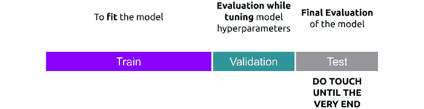
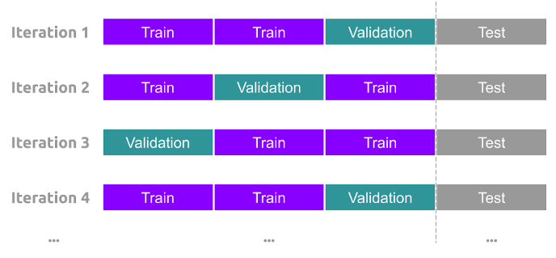

It's not always sunshine and blossoms in the land of Machine Learning. There are many hindrances and blockages in finding the best Machine Learning model for the given dataset. Let's discuss these issues in this article and possible methods to overcome them. When we know that \(x^2\) fits a curve better than just using \(x\) as a feature, why can't we use \(x^3\) and so on as a feature? We can. For that matter, we can approximate nearly every function using the Taylor series. However, we are not looking for a model that best matches the data points. We are looking for a model that provides a good representation of the training data while providing the best insights on future data points. Fitting the model too well on training data and not performing well (or sometimes worse) on the test data is a clear sign of Overfitting. (In terms of accuracy, if you see that training accuracy increases towards 100 with epochs while the test accuracy plateaus at around 70, you must understand that something is wrong here.)
Overfitting
\(\begin{align}P(x) = \sum_{n=0}^{\infty}\frac{f^{(n)}(a)}{n!}(x-a)^n \end{align}\)
Taylor Series equation for approximation of a function \(P(x)\)
This is also termed as "Generalization error" where in the model is unable to generalize the data. Code to demonstrate Overfitting is present in this repo as overfitting.py file. Increase in validation loss is another indication that the current model is overfitting.
To understand Overfitting, one must understand the differences between bias and variance first. Let's say we have a bunch of data points of a feature \(x\) and target \(y\) plotted over a 2-d graph. Our goal is to formulate the best approximation of the target variable \(y\) that depends on \(x\). In an ideal situation, we have the exact mathematical formula for the equation \(y=f(x)\). However, this is a machine learning test and not a math problem. Let's say two students, John and Jason, are asked to develop the best model for these data points. John sees the data and uses Linear Regression to fit the data (shown in the left plot), and Jason goes some steps further and uses polynomial regression to fit all the data points (shown in the right plot).
Linear Regression v/s Polynomial fit on training dataset.
Which model of the two do you think is better? Linear Regression or the Polynomial fit? These questions can be answered when we look at how these plots perform with test data. Shown below are charts depicting the performance of both these models on the test dataset. We see that Linear Regression performs decently well, while the polynomial plot makes pretty huge errors at many places. In other words, Linear Regression, while not great, gives us a general representation of the pattern. On the other hand, the Polynomial model performs outstandingly well on the training dataset and performs poorly on the test dataset. (The Generalization error we talked about).
Performance of Linear Regression and Polynomial fit on test dataset.
Hence, it is clear that John's model (Linear Regression) is the better model of the two considered models. Let's understand this in Machine Learning lingo now. As the line produced by Linear Regression cannot be curved, it will never be able to capture the true relationship between the data points. This inability of a Machine Learning model to capture the true relationship is called Bias. So the John's model has higher bias compared to Jason's model. In fact the bias in the later model is zero, as the model passes through all the points. We can compare how well the models performed on the test dataset using the error function (sum of squared errors) we defined. We see that John's model performs way better compared to Jason's model. This difference in the performance of models w.r.t. train and test datasets is known as Variance.
\(\begin{align}Error = \sum_{i=1}^{N}(y_{i}-\hat{y_{i}})^2 \end{align}\)
In Machine Learning Lingo, Jason's model has very low bias and high variance in comparison. This makes it hard to predict how well Jason's model might perform on future datasets. It might go terribly wrong. In contrast, John's model has high bias and low variance. It has a representation of relationship between variables. These traits make it a better model, consistently. Hence, Jason's model is said to be Overfit
Methods to overcome Overfitting
Okay! We have figured out that the model is overfiting. What are the next steps to take inorder to find the optimal model. Fortunately there are ways to solve this issue. Some of them are discussed below.
Choosing the best parameters that capture all the patterns in the data can be a tedious task. Many times many features are simply useless. These features must be removed during the training process to minimize the error.
Hyperparameters like Learning rate, max_depth (for decision trees), number of layers for neural networks, activation function and so on, must be tuned to yield the best possible results. All these fixes are towards the model. Lets see what we can do with the data that could help avoid Overfitting.

Another method that is an extension to splitting data is KFold Cross Validation. The idea here is to split the data into batches and training on different sets of batches everytime. This would give a unique combination of data everytime. Finally the score attained on all batches is averaged to be the performance of the model.

Lets dicuss these in detail here. Lets start with L2 Regularization. The idea here is that we don't want any outliers in the data because that might make the model shift towards them inorder to minimize the loss. Yes we can always remove these outliers, but it is a tedious task finding them. Due to these outliers, there is an increase in Bias and Variance of the model. L2 Regularization adds penalty to the loss function making the target variable less sensitive towards changes in feature varible. The intuition here is that by introducing small amount of bais, we get a significant drop in variance. mathematically speaking, L2 Regularization (also called Ridge Regularization), encourages the model weights to be close to zero, while keeping the important parameters in place, by adding penalty to the loss function. By doing this, the model becomes less sensitive towards outliers.
Effect of outliers on the model
Let's understand the mathematics behind Ridge Regression
\(\begin{align}J = \sum_{i=1}^{N}(y_{i}-\hat{y_{i}})^2 + \lambda\left | w \right |^2 \end{align}\)
\(\begin{align}\left | w \right |^2 = w^Tw =w_{1}^2+w_{2}^2+w_{3}^2+...+w_{D}^2 \end{align}\)
Recollect from Multiple Regression article that the loss function \(J(\theta)\) is given by:
\(\begin{align}J = (Y-Xw)^T(Y-Xw)+\lambda w^Tw \end{align}\)
\(\begin{align}J = Y^TY - 2Y^TXw+w^TX^TXw + \lambda w^Tw \end{align}\)
Minimize new cost function using calculus.
\(\begin{align}\frac{\partial J}{\partial w} = -2X^TY+2X^TXw+2\lambda w=0 \end{align}\)
\(\begin{align}(\lambda I +X^TX)w =X^TY \end{align}\)
\(\begin{align}w=(\lambda I + X^TX)^{-1}X^TY \end{align}\)
We see that this equation is very similar to the one we obtained during multiple regression. The extra term \(\lambda I\) penalizes the weights to be close to zero and helps avoid overfitting.
Ideally speaking, we want our input matrix \(X\) to be sparse. This means that using minimum number of features, we would like to generate a model that best generalizes the pattern in the data. This would require a regularization to aggressively to find the most important features. This is exactly what L1 Regularization does.
If \(N\) is the number of samples in the data and \(D\) be the number of dimensions. The matrix \(X\) is denoted as follows:
\(\begin{align}X = \begin{bmatrix} x_{11} & x_{12} & x_{13} & ... & x_{1D} \\ x_{21} & x_{22} & x_{23} & ... & x_{2D} \\ x_{31} & x_{32} & x_{33} & ... & x_{3D} \\ ... & ... & ... & ... & ... \\ x_{N1} & x_{N2} & x_{N3} & ... & x_{ND} \end{bmatrix} \end{align}\)
Ideally we would want \(D << N\)
\(\begin{align}J = \sum_{i=1}^{N}(y_{i}-\hat{y_{i}})^2 + \lambda\left | w \right | \end{align}\)
\(\begin{align}J = (Y-Xw)^T(Y-Xw)+\lambda\left | w \right | \end{align}\)
\(\begin{align}J = Y^TY - 2Y^TXw+w^TX^TXw + \lambda\left | w \right | \end{align}\)
\(\begin{align}\frac{\partial J}{\partial w} = -2X^TY+2X^TXw+\lambda sign(w)=0 \end{align}\)
\(sign(x)\) is given by:
\(\begin{align}sign(x) = \left\{\begin{matrix} \enspace 1\enspace \enspace if \enspace x>0\\ -1\enspace if \enspace x<0\\ 0\enspace \enspace if \enspace x=0\\ \end{matrix}\right. \end{align}\)
We can't solve this problem directly as direct differentiation is not possible. Hence, we have to use Gradient Descent to solve for optimal weights. After solving for w many of the weights will be equated to zero.
Important point to takeaway here is that derivative of a quadratic function is small for smaller values of x but is not absolutely zero. In contrast for values closer to zero derivate of sign function is absolute zero thus totally removing the effect of weights on the model. Hence making the \(X\) matrix sparse. L2 regularization encourages to be smaller and smaller while L1 regularization encourages weights to be zero.
Thank you for reading this article.